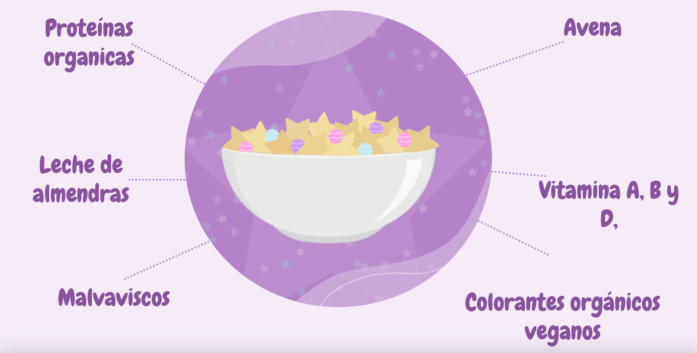

Home
About us
Mision y vision
Products
Contact
New Cereal
Nuestro producto ofrece calidad en nuestros ingredientes para que el consumidor tenga una experiencia inolvidable, es diferente por los ingredientes que contiene ya que va dirigidos para los niños, con una tematica diferente a la comun
Ingredientes

© Starlyn Company 2023